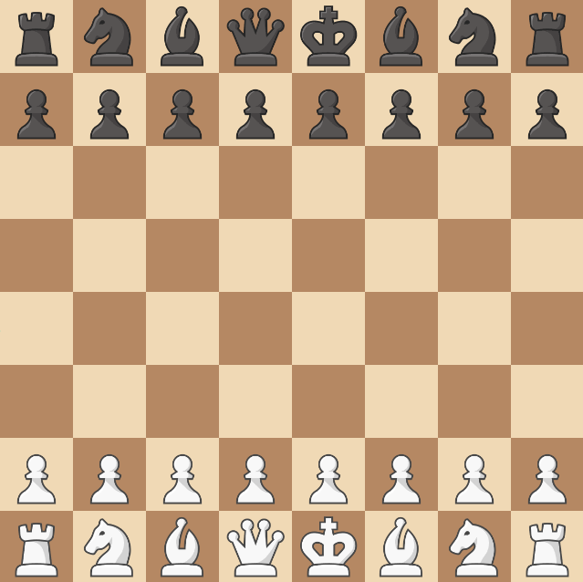
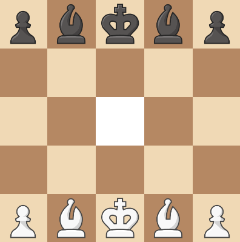

Getting started - Creating a custom game¶
Installation¶
Usage¶
Using the provided game factory¶
This is what runs on the online example:
from chessmaker.chess import create_game
from chessmaker.clients import start_pywebio_chess_server, PIECE_URLS
if __name__ == "__main__":
start_pywebio_chess_server(
create_game, # (1)
supported_options=["chess960", "knooks", "forced_en_passant", "knight_boosting", "omnipotent_f6_pawn",
"siberian_swipe", "il_vaticano", "beta_decay", "la_bastarda", "king_cant_move_to_c2",
"vertical_castling", "double_check_to_win", "capture_all_pieces_to_win", "duck_chess"],
piece_urls=PIECE_URLS |
{
"Knook": ["https://i.imgur.com/UiWcdEb.png", "https://i.imgur.com/g7xTVts.png"],
"Duck": ["https://i.imgur.com/ZZ2WSUq.png", "https://i.imgur.com/ZZ2WSUq.png"]
} # (2)
,remote_access=True # (3)
)
-
The game_factory argument is a function that creates a new game instance. The factory function should accept a list of boolean keyword arguments, which are specified in the supported_options argument. Accepting options are useful if you want to host a server that supports multiple variants of chess, but most of the time you know what variant you want to play, so it's not needed.
-
In order to use custom pieces, you need to provide the URLs of the images as a tuple with a URL for each player.
-
The remote_access argument puts the server on the internet, so you can play with your friends! It uses pywebio's remote access feature (which internally uses http://localhost.run).
Creating a standard game factory¶
Now, let's make our own game factory. This one won't support any custom rules - just the standard chess rules.
from itertools import cycle
from chessmaker.chess.base import Board
from chessmaker.chess.base import Game
from chessmaker.chess.base import Player
from chessmaker.chess.base import Square
from chessmaker.chess.pieces import Bishop
from chessmaker.chess.pieces import King
from chessmaker.chess.pieces import Knight
from chessmaker.chess.pieces import Pawn
from chessmaker.chess.pieces import Queen
from chessmaker.chess.pieces import Rook
from chessmaker.chess.results import no_kings, checkmate, stalemate, Repetition, NoCapturesOrPawnMoves
from chessmaker.clients import start_pywebio_chess_server
def _empty_line(length: int) -> list[Square]:
return [Square() for _ in range(length)]
def get_result(board: Board) -> str:
for result_function in [no_kings, checkmate, stalemate, Repetition(3), NoCapturesOrPawnMoves(50)]:
result = result_function(board)
if result:
return result
piece_row = [Rook, Knight, Bishop, Queen, King, Bishop, Knight, Rook]
def create_game(**_) -> Game:
white = Player("white")
black = Player("black")
turn_iterator = cycle([white, black])
def _pawn(player: Player):
if player == white:
return Pawn(white, Pawn.Direction.UP, promotions=[Bishop, Rook, Queen, Knight])
elif player == black:
return Pawn(black, Pawn.Direction.DOWN, promotions=[Bishop, Rook, Queen, Knight])
game = Game(
board=Board(
squares=[
[Square(piece_row[i](black)) for i in range(8)],
[Square(_pawn(black)) for _ in range(8)],
_empty_line(8),
_empty_line(8),
_empty_line(8),
_empty_line(8),
[Square(_pawn(white)) for _ in range(8)],
[Square(piece_row[i](white)) for i in range(8)],
],
players=[white, black],
turn_iterator=turn_iterator,
),
get_result=get_result,
)
return game
if __name__ == "__main__":
start_pywebio_chess_server(create_game, debug=True)
We aren't going to get into the details of how things work behind the scenes yet, but let's break down what's going on here.
Our game object is created with 2 arguments. Let's start with the simpler one.
The get_result argument is the function that will be called to determine the result of the game.
We create a result function that checks for all the standard end conditions: checkmate, stalemate, repetition, and the 50 move rule.
For simplicity, we could have also imported StandardResult for the same effect.
The board argument is the main object we'll be working with, and it is created with 3 arguments. Again, let's do the simpler arguments first.
The players argument is a list of the players in the game. In most cases, we'll have 2 players - but it's possible to have more. The names of the players are currently only used for display purposes.
Because ChessMaker supports altering the player's turns, we can't just use the player list to determine who's turn it is. The turn_iterator argument is a generator that will be called to get the next player in the turn order.
The square argument is a 2D list of Square objects.
Squares can also be None, if we want to make non-rectangular boards or have a board with holes in it.
Each square accepts an optional piece argument, which is the piece that will be placed on the square. A piece always needs to accept a player argument.
The first and last ranks are pretty simple. We just create a list of the pieces we want to use, and create a square for each one. This is because none of the pieces on those ranks need any extra arguments.
For our pawns, we need to specify the direction they can move in - and what can they promote to. We can do this using the direction and promotions arguments.
The result is a complete chess game, with all the standard rules:

Creating a custom game factory¶
Now that we've seen how to create a basic game factory, let's look at how to create a custom one. In this example, we'll create a 5x5 board, pawns on the corners, kings in the middle of the edge ranks, bishops between the pawns and the kings - and a hole in the middle of the board.
from itertools import cycle
from chessmaker.chess.base import Board
from chessmaker.chess.base import Game
from chessmaker.chess.base import Player
from chessmaker.chess.base import Square
from chessmaker.chess.pieces import Bishop
from chessmaker.chess.pieces import King
from chessmaker.chess.pieces import Pawn
from chessmaker.chess.results import StandardResult
from chessmaker.clients import start_pywebio_chess_server
def _empty_line(length: int) -> list[Square]:
return [Square() for _ in range(length)]
def create_custom_game(*_):
white = Player("white")
black = Player("black")
turn_iterator = cycle([white, black])
def _pawn(player: Player):
if player == white:
return Pawn(white, Pawn.Direction.UP, promotions=[Bishop])
elif player == black:
return Pawn(black, Pawn.Direction.DOWN, promotions=[Bishop])
game = Game(
board=Board(
squares=[
[Square(piece(black)) for piece in [_pawn, Bishop, King, Bishop, _down_pawn]],
_empty_line(5),
_empty_line(2) + [None] + _empty_line(2),
_empty_line(5),
[Square(piece(white)) for piece in [_pawn, Bishop, King, Bishop, _up_pawn]],
],
players=[white, black],
turn_iterator=turn_iterator,
),
get_result=StandardResult(),
)
return game
if __name__ == "__main__":
start_pywebio_chess_server(create_custom_game, debug=True)
And the result:
